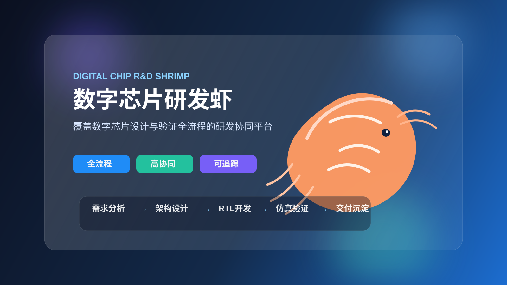

面向数字芯片设计与验证流程的研发标准库与协同能力底座，帮助团队把模板、脚本、流程与知识沉淀成可复用资产。

数字芯片研发虾聚焦数字芯片设计与验证场景，把需求理解、架构设计、RTL 开发、仿真验证、形式检查、综合协同、回归管理和知识沉淀串成一套可扩展的研发方法体系。
从新模块起步、UVM 平台搭建，到回归、覆盖率、形式与实现协同，支持数字芯片研发从单点工具到流程化体系的演进。
设计、验证、实现与管理角色可以围绕统一方法和统一资产工作，减少重复劳动与沟通损耗。
把模板、脚本、校验方法和流程文档沉淀成可复用资产，而不是每个项目都从零搭平台。
加速需求到验证闭环，缩短平台启动时间与项目迭代周期。
通过规范化流程、模板和验收机制，降低遗漏、返工与平台失控风险。
减少重复劳动和交接成本，让知识从个人经验升级为团队可复用资产。
首页继续保留宣传页，同时把现有项目资料整理成统一入口，方便老板、客户、合作伙伴或团队成员快速查看项目能力、方法沉淀与使用方式。
从仓库介绍、安装方式到主入口说明，适合第一次了解 digic-chip-stdlib 的访客。
聚焦验证平台路线、校验能力与工具矩阵，适合作为项目宣传材料、方案说明和能力展示入口。